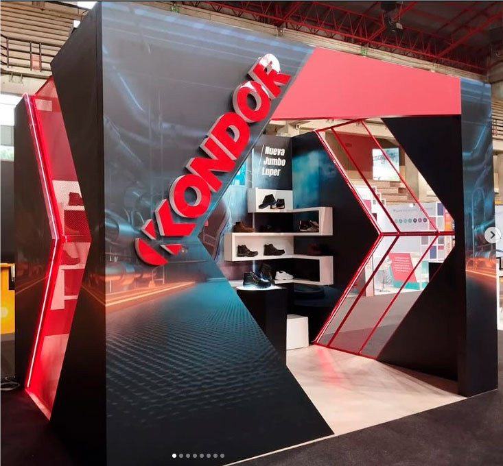
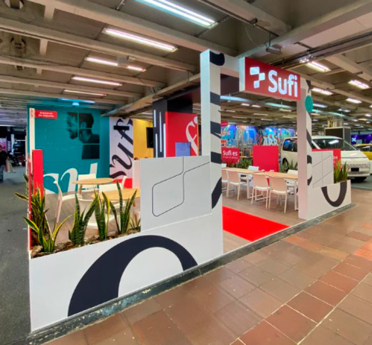

Como hobbie y emprendimiento me dedico al diseño e impresión 3D, gracias a que en el año 2014 fuí uno de los ganadores del programa Capital Semilla de la Alcaldia de Medellín,
así adquiri mi primera impresora 3d para Iniciar mi emprendimiento llamado Ink3d 3D y así comenzar a desarrollar prototipos y pequeñas series de productos.
Soy deportista aficionado al Running y al gimnasio,
también soy entusiasta de los vehículos eléctricos como e-scooter y e-bikes, para los cuales tambien he diseñado accesorios impresos en 3d.
Soy una persona muy observadora
y de pocas palabras al principio, pero poseedor de un pensamiento lógico y analítico.
A continuación les dejo un video con la presentación de mi idea de negocio ante Capital Semilla.
| Proyecto | Cliente | Foto |
|---|---|---|
| Semana de la salud ocupacional | Calzado Kondor |  |
| Salón del automovíl 2023 | Sufi |  |